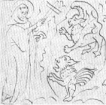

Kapli sv. Kříže na Karlštejně vyzdobil Mistr Theodorik.
|
KAREL IV. A JEHO DOBA
Karel IV. byl vychováván ve Francii a patřil k nejvzdělanějším panovníkům na českém trůně. Za jeho vlády dochází k rozvoji všech oblastí – gotické architektury (Chrám sv. Víta, Karlův most, Nové Město pražské, Karlštějn…), vzdělanosti (univerzita), náboženství (kult svatých patronů, zakládání klášterů a kostelů, povýšení pražského biskupství na arcibiskupství, zřízení biskupství v Litomyšli...), výtvarného umění (Mistr Theodorik, Mistr vyšebrodského oltáře, Mistr třeboňského oltáře…).
|
Historie
V roce 1310 nastupují na český trůn Lucemburkové. Král Jan tráví většinu času v cizině. Karel IV. (1346-1378) se stává císařem Svaté říše římské. Václav IV. (1378-1419) se snažil navázat na jeho odkaz a Zikmund (†1437) musel čelit rozmachu husitství.
|
Ze 14. stol. se zachovala řada portrétů Karla IV. Tento je součástí votivního obrazu pražského arcibiskupa Jana Očka z Vlašimi.
|
Karel IV.: Vita Caroli
Karel IV. není autorem celého díla Vita Caroli (Život Karlův), ale pouze prvních 14. kapitol. Léta 1340 až 1346 popsal už někdo jiný. Životopis je věnován Karlovým nástupcům. Začíná tažením do Itálie, při němž byl málem otráven, a končí Karlovým zvolením za římského krále. Čech se dotýká pouze okrajově. Popisuje je jako velmi zanedbané a zpustošené.
|
Karel IV. Lucemburský
(1316-1378)
Karel IV. ovládal řadu jazyků (latina, francouzština, němčina, italština, čeština) a sám byl literárně činný. Napsal latinskou legendu o sv. Václavu a vlastní životopis (Vita Caroli). Významně se podílel na textech kronikářských (latinské kroniky Beneše Krabice z Veitmile a Přibíka Pulkavy z Radenína) i právnických Zlatá bula Karla IV. (říšský zákoník), Korunovační řád, Majestas Carolina (český zákoník, který se mu nepodařilo prosadit, a proto musel oznámit, že shořel…). Dopisoval si s italským renesančním básníkem Petrarkou.
|
Duchovní literatura
Mistr Theodorik: Svatá Kateřina
|
Duchovní literatura
Karel IV. byl velice zbožný, sbíral relikvie a všemožně podporoval církev. Za jeho vlády byla přeložena Bible (leskovecko-drážďanská), vznikl Pasionál (překlad Voraginovy Zlaté legendy doplněný o české světce) a dvě původní veršované legendy – o sv. Kateřině a sv. Prokopu. První byla určena velmi vzdělanému publiku, druhá je prostší.
|

Svatovítská katedrála byla dokončena až ve 20. století. Víš, kdo se podílel na jejím budování?
Co víš o sv. Kateřině?
Co líčí ukázka?
|
Interiér Karolina (Univerzita Karlova)
|
Bartoloměj z Chlumce
Bartoloměj z Chlumce (†1379) zvaný též Claretus nebo Klaret učil na pražské univerzitě. Proslul jako autor latinsko-českých slovníků (Vokabulář gramatický, Bohemář, Glosář), ve kterých hledá česká slova pro latinské odborné termíny. Jeho slovníky byly veršované, aby si je žáci lépe zapamatovali.
Klaret: Vokabulář gramatický
Fertur grammatica slovočtena, litera čtena,
vocalis hlása, liquida rozměk, muta němka,
consona zvučna, sit pólhlása semivocalis,
sillaba sřěk geritur, posicio vloženie,
composicio složenie, dyptongus est dvojhlas.
|
|
Univerzitu chtěl založit už Václav II., ale podařilo se to až Karlovi IV. V roce 1348 vznikla v Praze první univerzita ve střední Evropě a do Čech přijela řada učenců, kteří zde vyučovali teologii, práva, lékařství a svobodná umění.
Nahraď Klaretovy staročeské termíny současnými.
|
Básnická skladba Podkoní a žák zachycuje spor mezi panským sluhou a studentem, kteří se hádají o to, kdo je na tom lépe. Během diskuze ale vysvítají spíše záporné stránky obou stavů. Hádka nakonec vyústí v hospodskou rvačku...
Co tvrdí podkoní (dvořák) o žácích? Jak na to reaguje žák?
Jakým způsobem oba argumentují?
|
Podkoní a žák
|
Žákovská poezie
Univerzitní studenti (žáci) skládali rozverné básně o lásce, studiu, duchovenstvu atd. Psali satiry, parodovali dobové literární žánry a uměli si udělat legraci i sami ze sebe. Své vzdělání mohli předvést v dvoujazyčné makaronské poezii – známá je česko-latinská báseň Detrimentum pacitor (Trpím bolestí). Žák vystupuje i v dvorské Závišově písni.
|
Píseň veselé chudiny
Univerzitní studenti
|
Píseň veselé chudiny
|
Hradecký rukopis
Za vlády Karla IV. vznikly satiry sebrané v Hradeckém rukopise (Desatero kázanie božie, Satiry o konšelích a řemeslnících, O lišcě a o čbánu).
Srovnej Píseň veselé chudiny se skladbou Podkoní a žák. Co mají společného? V čem se liší?
Jaký byl život chudiny ve středověku?
|
Nová rada (1395) je zvířecí alegorie, která byla určena Václavu IV. Jejím autorem je Smil Flaška z Pardubic (dříve panoval názor, že je to komický pseudonym, který naznačoval Václavovy nectnosti, ale zřejmě šlo o jméno pravé).
Srovnej rady jelena a opice.
Charakterizuj povahy obou zvířat.
|
Smil Flaška z Pardubuc: Nová rada
Hlavní postavou Nové rady je lev (mladý král), který svolává zvířata (pány), aby mu poradila, jak má vládnout. Podle své povahy mu říkají, že má být zbožný (orel), chamtivý (vlk), pěkně ustrojený (páv), hříšný (svině) atd.
|
Václav IV. Lucemburský
(1361-1419)
Václav IV. musel čelit silné české šlechtě, ambicím svého bratra Zikmunda a krizi v církvi. Jeho vláda nebyla příliš úspěšná, ale kulturní rozkvět za jeho panování trvá.
Zvířatům jsou tradičně připisovány určité vlastnosti. Proč?
Liška je mazaná, had slizký, páv pyšný, kráva blbá atd. Je to pravda?
Proč jsou domácím zvířatům připisovány negativní rysy?
Zjisti, jaký byl původní význam slova pitomý.
|
Oráč a Smrt
|
Jan ze Žatce: Oráč z Čech
Velmi smutným tématem se zabývá německá skladba Ackermann aus Böhmen (Oráč z Čech), kterou napsal měšťan Johannes von Saaz (Jan ze Žatce). Oráč se v ní soudí se Smrtí, protože mu vzala jeho manželku.
|
Tkadleček
Oráčem z Čech se nechal inspirovat neznámý autor české prozaické skladby Tkadleček. Tkadleček zažaluje Neštěstí, protože mu vzalo jeho milou.
Srovnej argumenty Smrti a Oráče.
Kdo z nich má pravdu?
Kdo je v právu?
|
Tomáš Štítný ze Štítného
(1333-1403)
Tomáš Štítný ze Štítného studoval na pražské univerzitě, ale studia nedokončil a zbytek života trávil střídavě na své venkovské tvrzi a v Praze. Věnoval se překladatelství (Knížky o šašiech) a pro své děti psal mravoučné i náboženské traktáty (Knížky šestery o obecných věcech křesťanských, Řeči besední, Řeči nedělní a sváteční), což bylo u laika výjimečné.
|
Tomáš Štítný ze Štítného
|

Svůdce a dívka z rukopisu Tomáše Štítného
|
Internetové stránky
Karlštejn, fotografie
Ackermanm aus Böhmen, ilustrovaný rukopis
Exkurze
Karlštejn
Pražské gotické památky
Strahovský klášter, gotické malířství

Kristus na hoře Olivetské, Mistr vyšebrodského oltáře
|
Doporučená četba
Claretus: Ptačí zahrádka, přel. J.Nechutová, Petrov, Brno 1991
Dějiny Univerzity Karlovy (2 svazky)
Dvě legendy z doby Karlovy, Praha 1959 (Legenda o sv. Prokopu, Život sv. Kateřiny)
Jan ze Žatce: Oráč z Čech, přel. J.Povejšil, Vyšehrad, Praha 1985
Karel IV.: Vlastní životopis, přel. J.Pavel, Odeon, Praha 1978
Krása, Josef: Rukopisy Václava IV., Odeon, Praha 1974
Kroniky doby Karla IV., přel. J.Pavel, Svoboda, Praha 1987
Mahler, Zdeněk: Katedrála, Primus, Praha 1994
Pešina, Jaroslav: Mistr vyšebrodského cyklu, Odeon, Praha 1987
Počátky staročeské mystiky, Matice česká, Praha 1948
Smil Flaška z Pardubic: Nová rada, přebásnil František Vrba
Spěváček, Jiří: Jan Lucemburský a jeho doba 1269-1346
Spěváček, J.: Karel IV., Život a dílo 1316-1378
Spěváček, J.: Václav IV. 1361-1419
Středověké písně cechu žákovského, Melantrich, Praha 1958
Štítný ze Štítného, Tomáš: Knížky o hře šachové a jiné, SNKLHU, Praha 1956
Tkadleček, Hádka milence s Neštěstím, Odeon, Praha 1979
Umění na dvoře Karla IV., Knižní klub, Praha 2003
|
Připrav si referát o některé z uvedených knih nebo internetových stránek.
Madona z Veveří

Legenda o sv. Prokopu
|
|